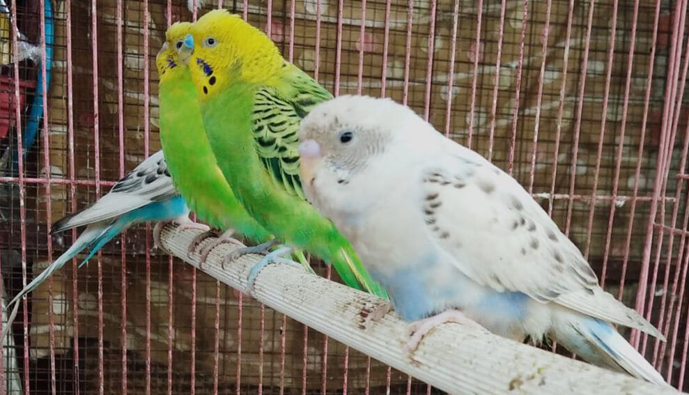
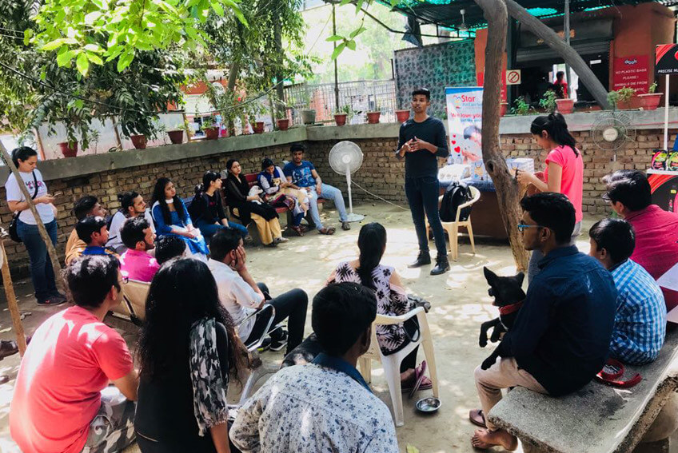

Raja Garden, New Delhi · since 1980
Sanjay Gandhi Animal Care Centre.
PFA's flagship animal care centre in Delhi. It began in 1980 with a legacy left to Shri Sanjay Gandhi by Mrs Ruth Cowell of New South Wales, Australia, and it has cared for the city's animals, day and night, ever since.
- 1980the year a legacy founded it
- 3,000+animals in its care at any time, as the centre states
- 24 hoursits wards and out-patient department


Inside the centre
What happens here, round the clock.
A shelter and a place of treatment in one, for every kind of animal the city brings to its gate.
In-patient wards
Open 24 hours, housing over 3,000 animals at any one time.
Out-patients
A 24-hour out-patient department, with an animal ambulance that works through the night.
Intensive care
Separate intensive care for large animals and for small ones, within the wards.
Operation theatre
The hub of the centre's animal birth control programme.
Laboratory
X-ray and blood tests on site, so a diagnosis does not wait.
Animal birth control
Sterilisation and vaccination for the city's community dogs, one of the centre's key programmes.
Gaushala
A home within the centre for the cattle in its care.
Animal cemetery
One of the very few burial grounds for animals in Delhi.
Photographs
A glimpse of the centre.
The photographs of the centre are on their way to this page.
Help the centre
Bring supplies, or bring a group.
Tell the centre what you have in mind and someone will reply to agree a day. To give your own time, volunteer through PFA's one volunteer application, with the centre already chosen.
Received
Keep this number. Someone will reply on the contact you gave to agree a day and what to bring. Please wait for that reply before you travel.
Finding it
Raja Garden, West Delhi.
- Address
- Sanjay Gandhi Animal Care Centre, Raja Garden, New Delhi 110027, near Shivaji College and the Delhi Home Guards head office
- Metro
- Rajouri Garden
- Call the centre
- +91 95608 02425+91 88823 25407
- sgacc1980@gmail.com
- Its own site
- sanjaygandhianimalcarecentre.org

One legacy built this centre.
Mrs Ruth Cowell never saw the thousands of animals her gift would care for. A gift in a will can still do that for the animals of tomorrow.